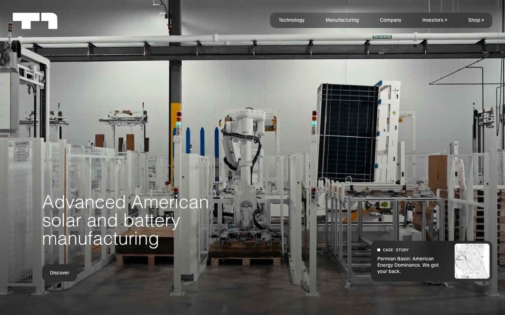

Solar & battery manufacturingSelected
T1 Energy
Factory-floor blueprint on warm vellum. Monochrome, whisper-light type, rounded photo portholes.
#f0efe9#ffffff#322d2a#0f0e12
- Type
- One sans, weight 300 at 52px for headlines, 400 for text
- Shape
- 80px image radius, pill buttons, no shadows
- Signature
- 4px square before every section label; dark floating nav pill
- For COOK
- Lets plant photography carry the brand. Calm and precise, reads as trustworthy to factory owners.